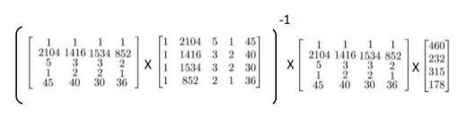

多元线性回归
多维特征
我们对房价模型增加更多的特征，例如房间数楼层等，构成一个含有多个变量的模型，模型中的特征为$\left( {x_1},{x_2},…,{x_n} \right)$。
引入一系列新的注释：
$n$ 代表特征的数量
${x^\left( i \right)}$代表第 $i$ 个训练实例，是特征矩阵中的第$i$行，是一个向量（vector）。
比方说，上图的
${x}_{j}^{\left( i \right)}$代表特征矩阵中第 $i$ 行的第 $j$ 个特征，也就是第 $i$ 个训练实例的第 $j$ 个特征。
如上图的$x_{2}^{\left( 2 \right)}=3,x_{3}^{\left( 2 \right)}=2$，
支持多变量的假设 $h$ 表示为：$h_{\theta}\left( x \right)={\theta_0}+{\theta_1}{x_1}+{\theta_2}{x_2}+…+{\theta_n}{x_n}$，
为了使得公式能够简化一些，引入$x_{0}=1$，则公式转化为：$h_{\theta}\left( x \right)={\theta_0}{x_0}+{\theta_1}{x_1}+{\theta_2}{x_2}+…+{\theta_n}{x_n}$
最终公式可以简化为：$h_{\theta} \left( x \right)={\theta^T}X$
其中：
梯度下降
与单变量线性回归类似，在多变量线性回归中，我们也构建一个代价函数，则这个代价函数是所有建模误差的平方和，即：
我们的目标和单变量线性回归问题中一样，是要找出使得代价函数最小的一系列参数。
多变量线性回归的批量梯度下降算法为：
对各参数$\theta_n$进行梯度下降更新：
我们开始随机选择一系列的参数值，计算所有的预测结果后，再给所有的参数一个新的值，如此循环直到收敛。
特征缩放
以房价问题为例，假设我们使用两个特征，房屋的尺寸和房间的数量，尺寸的值为 0-2000平方英尺，而房间数量的值则是0-5，以两个参数分别为横纵坐标，绘制代价函数的等高线图能，看出图像会显得很扁，梯度下降算法需要非常多次的迭代才能收敛。
解决的方法是尝试将所有特征的尺度都尽量缩放到-1到1之间。
最简单的方法是令：${x}_{n}=\frac{x_n-\mu_n}{s_n}$，其中 $\mu_{n}$是平均值，$s_{n}$是标准差。(标准化处理)
学习率
梯度下降算法收敛所需要的迭代次数根据模型的不同而不同，我们不能提前预知，我们可以绘制迭代次数和代价函数的图表来观测算法在何时趋于收敛。

也有一些自动测试是否收敛的方法，例如将代价函数的变化值与某个阀值（例如0.001）进行比较，但通常看上面这样的图表更好。
梯度下降算法的每次迭代受到学习率的影响，如果学习率$a$过小，则达到收敛所需的迭代次数会非常高；如果学习率$a$过大，每次迭代可能不会减小代价函数，可能会越过局部最小值导致无法收敛。
通常可以考虑尝试些学习率：
$\alpha=0.01，0.03，0.1，0.3，1，3，10$
多项式回归
拟合房屋大小(size)与房价(price)之间的关系，我们可以猜测房价与房屋大小是三次函数的关系（二次函数关系的话，房屋大小增加，房价会下降不符合现实）：
也可以猜测：
在后续的学习中，我们会让算法自动选择合适的函数进行拟合，目前想表达的是可以用不同的函数对数据进行拟合。
注：如果我们采用多项式回归模型，在运行梯度下降算法前，特征缩放非常有必要。
正规方程
假设我们的训练集特征矩阵为 $X$（包含了 $x_0=1$）并且我们的训练集结果为向量 $y$，则利用正规方程解出向量
以下表示数据为例：

即：

运用正规方程方法求解参数：

梯度下降与正规方程的比较：
| 梯度下降 | 正规方程 |
|---|---|
| 需要选择学习率$\alpha$ | 不需要 |
| 需要多次迭代 | 一次运算得出 |
| 当特征数量$n$大时也能较好适用 | 需要计算$\left( {X^T}X \right)^{-1}$ 如果特征数量n较大则运算代价大，因为矩阵逆的计算时间复杂度为$O\left( n^3 \right)$，通常来说当$n$小于10000 时还是可以接受的 |
| 适用于各种类型的模型 | 只适用于线性模型，不适合逻辑回归模型等其他模型 |
$X’X$不可逆
第一种情况：
在预测住房价格时，如果$x_1$是以英尺为尺寸规格计算的房子，$x_2$是以平方米为尺寸规格计算的房子，同时，你也知道1米等于3.28英尺 ( 四舍五入到两位小数 )，这样，你的这两个特征值将始终满足约束：$x_1=x_2*\left( 3.28 \right)^2$。
第二种情况：
在$m$小于或等于n的时候，例如，有$m$等于10个的训练样本也有$n$等于100的特征数量。通常，我们会使用一种叫做正则化的线性代数方法，通过删除某些特征或者是使用某些技术，来解决当$m$比$n$小的时候的问题。